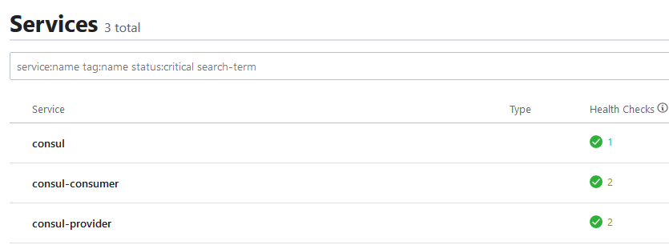

SpringCloud-Consul开发环境配置原文出处:本文由博客园博主蜗牛李提供。
原文连接:https://www.cnblogs.com/nick258/p/12016582.html
一、consul安装
1、下载：https://www.consul.io/downloads.html；
2、选择版本：本人开发环境是windows，所以选择win64；
3、安装：保存至D:/SpringCloud/consul（自定义路径，linux将保存路径加到PATH），执行consul -v，没报错说明安装成功；
4、启动consul：搭建集群环境至少需要3个节点，本次只介绍本地开发调试，使用开发者模式启动即可，进入consul文件夹，执行consul agent -dev；
5、检验是否启动成功：打开浏览器，访问http://localhost:8500
从界面可以看到consul能做什么：服务发现、健康检查、K/V存储、多数据中心；
二、新建Srping Cloud Consul项目（此文仅为记录，以下源码参考重新定义springcloud示例）
1、创建Maven父级pom工程
<?xml version="1.0" encoding="UTF-8"?>
<project xmlns="http://maven.apache.org/POM/4.0.0"
xmlns:xsi="http://www.w3.org/2001/XMLSchema-instance"
xsi:schemaLocation="http://maven.apache.org/POM/4.0.0 http://maven.apache.org/xsd/maven-4.0.0.xsd">
<parent>
<artifactId>code</artifactId>
<groupId>cn.springcloud.book</groupId>
<version>1.0-SNAPSHOT</version>
</parent>
<modelVersion>4.0.0</modelVersion>
<artifactId>ch13-1</artifactId>
<packaging>pom</packaging>
<modules>
<module>ch13-1-consul-provider</module>
<module>ch13-1-consul-consumer</module>
<!--<module>ch13-1-consul-config</module>-->
</modules>
<properties>
<project.build.sourceEncoding>UTF-8</project.build.sourceEncoding>
<java.version>1.8</java.version>
</properties>
<dependencies>
<dependency>
<groupId>org.springframework.cloud</groupId>
<artifactId>spring-cloud-starter-consul-all</artifactId>
</dependency>
<dependency>
<groupId>org.springframework.boot</groupId>
<artifactId>spring-boot-starter-web</artifactId>
</dependency>
</dependencies>
<!-- 管理依赖 -->
<dependencyManagement>
<dependencies>
<dependency>
<groupId>org.springframework.cloud</groupId>
<artifactId>spring-cloud-dependencies</artifactId>
<version>Finchley.RELEASE</version>
<type>pom</type>
<scope>import</scope>
</dependency>
</dependencies>
</dependencyManagement>
<!--注意： 这里必须要添加，否则各种依赖有问题 -->
<repositories>
<repository>
<id>spring-milestones</id>
<name>Spring Milestones</name>
<url>https://repo.spring.io/libs-milestone</url>
<snapshots>
<enabled>false</enabled>
</snapshots>
</repository>
</repositories>
</project>
2、创建consul-provider模块
pom文件继承父级即可，创建启动入口类ConsulProviderApplication：
/**
* consul-server 的启动主类
* 为了简化代码，我们将 Controller 代码放在主类中，实际工作中不建议这么做
*/
@RestController
@SpringBootApplication
public class ConsulProviderApplication {
public static void main(String[] args) {
SpringApplication.run(ConsulProviderApplication.class, args);
}
/**
* 注意：新版Spring Cloud Consul 默认注册健康检查接口为：/actuator/health
*
* @return SUCCESS
*/
@GetMapping("/actuator/health")
public String health() {
return "SUCCESS";
}
/**
* 提供 sayHello 服务:根据对方传来的名字 XX，返回:hello XX
* @return String
*/
@GetMapping("/sayHello")
public String sayHello(String name){
return "hello," + name;
}
}
在bootstrap.yml添加配置信息：
server:
port: 8081 # 因为本地启动，防止端口冲突
spring:
application:
name: consul-provider
cloud:
consul:
host: 127.0.0.1 # consul 启动地址
port: 8500 # consul 启动端口
3、创建consul-consumer模块
这里我们使用Spring Cloud Openfeign作为服务调用组件，因此要在consul-consumer的pom引入以下依赖：
<dependencies>
<dependency>
<groupId>org.springframework.cloud</groupId>
<artifactId>spring-cloud-starter-openfeign</artifactId>
</dependency>
</dependencies>
创建启动入口类ConsulConsumerApplication：
/**
* consul-consumer 的启动主类
* 为了简化代码，我们将 Controller 代码放在主类中，实际工作中不建议这么做
*/
@RestController
@SpringBootApplication
@EnableFeignClients
public class ConsulConsumerApplication {
/** 调用 hello 服务*/
@Autowired
private HelloService helloService;
@GetMapping("/actuator/health")
public String health(){
return "SUCCESS";
}
/** 接收前端传来的参数，调用远程接口，并返回调用结果 */
@GetMapping("/hello")
public String hello(String name){
return helloService.sayHello(name);
}
public static void main(String[] args) {
SpringApplication.run(ConsulConsumerApplication.class,args);
}
}
添加fegincliet类HelloService
/** 使用 openfeign 组件，调用远程服务 */
@FeignClient("consul-provider")
public interface HelloService {
@RequestMapping(value = "/sayHello",method = RequestMethod.GET)
String sayHello(@RequestParam("name") String name);
}
在bootstrap.yml添加配置信息：
server:
port: 8082 # 因为本地启动，防止端口冲突
spring:
application:
name: consul-consumer
cloud:
consul:
host: 127.0.0.1 # consul 启动地址
port: 8500 # consul 启动端口
三、效果展示
1、启动consul;
2、启动consul-provider和consul-consumer；
3、浏览器输入http://localhost:8500，如果services->Health Checks显示绿色勾选，即表示发布成功；

4、浏览器输入http://localhost:8082/hello?name=bootbook，如果“hello bootbook”，那么恭喜你，发布成功了。